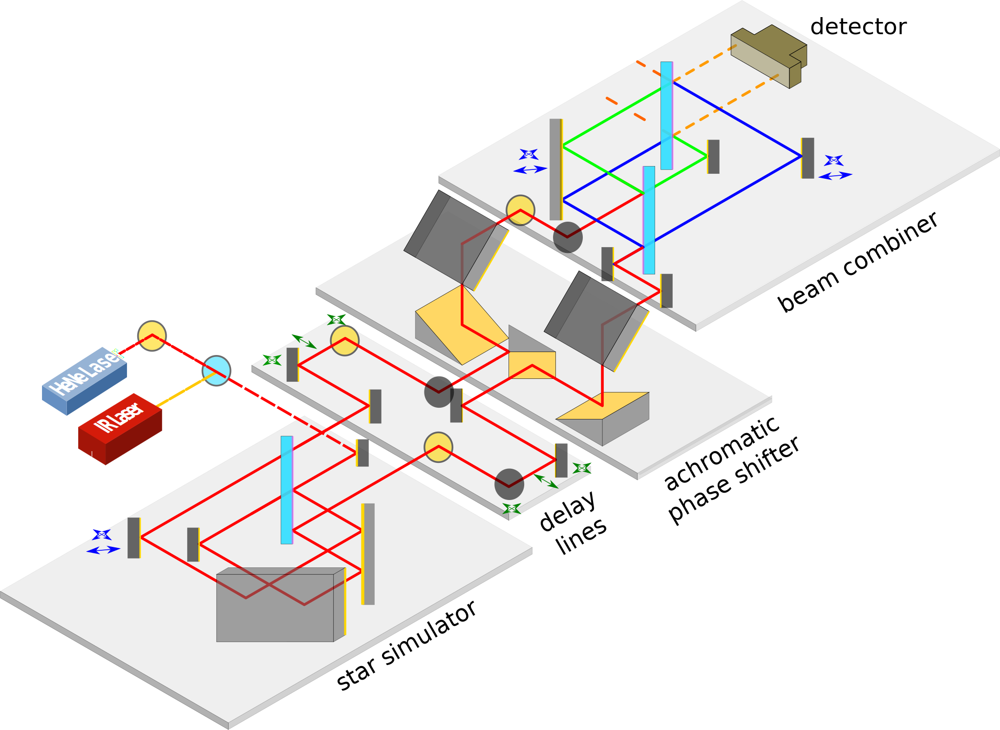

My focus is on building the Nulling Interferometry Cryogenic Experiment (NICE), which is a nulling interferometry testbed that supports the Large Interferometer for Exoplanets (LIFE) space mission, a proposed formation-flying space mission with the goal of characterising the atmospheres and potential habitability of terrestrial (i.e. small and rocky) exoplanets.
NICE aims to develop some of the technology required for this mission, by demonstrating mid-infrared broadband nulling interferometry on the ground.
Achieving the deep null required for LIFE requires sub-nanometer matching of the optical path lengths, and sub-arcsecond beam parallelism. I am developing metrology systems to monitor and stabilize the optical path lengths and beam pointing within the experiment.
